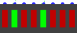

LED Bar
LED Bar
| Librairie : | Entrée/Sortie |
| Introduction :: | 2.1.3 |
| Apparence : |  |
Comportement
LEDs will display the value of their inputs by coloring the LED as specified by its On Color and Off Color attribute, depending on whether the input is 1 or 0. Floating (U) or error (E) values are considered disabled.
If a clock is present in the circuit, it is possible to simulate light loss in terms of clock ticks.
Broches
The led bar has either a pin per led to the south or north, or a bus to the east or west, depending on the property parameters Select Location.
Attributs
- Input Format
-
Separated: Each led on the bar will have its own pin.
On Wire: The bar is driven by a bus with a bit width equal to the Segment property. - Segments
- Determines the number of LEDs on the bar
- Select Location
- Determine which side the pines or the bus will be on
- On Color
- Color to be displayed when input value is active
- Off Color
- Color to be displayed when input value is not active
- Light-Persitence
- If this value is greater than 1, the LED will remain colored for the duration of the indicated clicks. Requires a hrologe in the circuit.
- Étiquette
- Le texte de l'étiquette associée au composant.
- Emplacement de l'étiquette
- L'emplacement de l'étiquette par rapport au composant.
- Police de l'étiquette
- La police de caractères avec laquelle l'étiquette doit être affichée.
- Couleur de l'étiquette
- La couleur avec laquelle l'étiquette doit être dessinée.
Comportement de l'outil pousser
None.
Comportement de l'outil text
None.
Retour à Référence de la bibliothèque